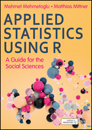
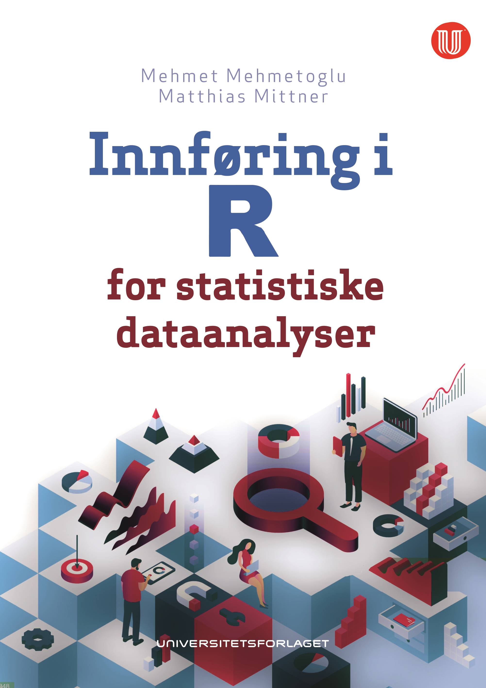

Publications
Books

Mehmetoglu, M. & Mittner, M. (2022). Applied Statistics using R. SAGE. link

Mehmetoglu, M. & Mittner, M. (2020). Innføring i R for statistiske dataanalyser. Universitetsforlaget. link
Preprints/Submitted papers
Go here for a list of all my preprints
[65] Groot, J., Miletic, S., Isherwood, S., Tse, D., Habli, S., Haberg, A., Bazin, P., Mittner, M. & Forstmann, B. (2024-05-10). A High-Resolution 7 Tesla Resting-State Fmri Dataset Optimized for Studying the Subcortex. https://papers.ssrn.com/abstract = 4819910 status: submitted
[64] Drevland, R., Aasen, S., Csifcsák, G., Alexandersen, A. & Mittner, M. (2024-05-01). Reducing mind wandering using continuous theta burst stimulation. https://osf.io/preprints/psyarxiv/u5j7s/ status: submitted
[63] Aasen, S., Drevland, R., Csifcsák, G. & Mittner, M. (2024-04-02). Increasing Mind Wandering With Accelerated Intermittent Theta Burst Stimulation Over the Left Dorsolateral Prefrontal Cortex. https://osf.io/preprints/psyarxiv/fkx3w/ status: submitted
[62] Vékony, T., Farkas, B., Brezóczki, B., Mittner, M., Csifcsák, G., Simor, P. & Nemeth, D. (2023-05-05). Mind Wandering Enhances Predictive Processing. https://www.researchsquare.com/article/rs-2874035/v1 status: submitted
Papers
2024
[61] Mehmetoglu, M., Määttänen, I. & Mittner, M. (2024). Testing Sexual Strategy Theory in Norway. Behavioral Sciences. 14:6, pp. 438 doi:10.3390/bs14060438
2023
[60] Ørbo, M., Grønli, O., Larsen, C., Vangberg, T., Friborg, O., Turi, Z., Mittner, M., Csifcsak, G. & Aslaksen, P. (2023). The Antidepressant Effect of Intermittent Theta Burst Stimulation (iTBS): Study Protocol for a Randomized Double-Blind Sham-Controlled Trial. Trials. 24:1, pp. 627 doi:10.1186/s13063-023-07674-6
[59] Groot, J., Miletic, S., Isherwood, S., Tse, D., Habli, S., Håberg, A., Forstmann, B., Bazin, P. & Mittner, M. (2023). Echoes from Intrinsic Connectivity Networks in the Subcortex. Journal of Neuroscience. doi:10.1523/JNEUROSCI.1020-23.2023
[58] Rasmussen, I., Mittner, M., Boayue, N., Csifcsák, G. & Aslaksen, P. (2023). Tracking the Current in the Alzheimer’s Brain - Systematic Differences between Patients and Healthy Controls in the Electric Field Induced by tDCS. Neuroimage: Reports. 3:2, pp. 100172 doi:10.1016/j.ynirp.2023.100172
[57] Sedlinska, T., Bolte, L., Melsæter, E., Mittner, M. & Csifcsák, G. (2023). Transcranial Direct-Current Stimulation Enhances Pavlovian Tendencies during Intermittent Loss of Control. Frontiers in Psychiatry. 14 doi:10.3389/fpsyt.2023.1164208
[56] Kreis, I., Zhang, L., Mittner, M., Syla, L., Lamm, C. & Pfuhl, G. (2023). Aberrant Uncertainty Processing Is Linked to Psychotic-like Experiences, Autistic Traits, and Is Reflected in Pupil Dilation during Probabilistic Learning. Cognitive, Affective, & Behavioral Neuroscience. doi:10.3758/s13415-023-01088-2
[55] Nawani, H., Mittner, M. & Csifcsák, G. (2023). Modulation of Mind Wandering Using Transcranial Direct Current Stimulation: A Meta-Analysis Based on Electric Field Modeling. NeuroImage. , pp. 120051 doi:10.1016/j.neuroimage.2023.120051
2022
[54] Alexandersen, A., Csifcsák, G., Groot, J. & Mittner, M. (2022). The Effect of Transcranial Direct Current Stimulation on the Interplay between Executive Control, Behavioral Variability and Mind Wandering: A Registered Report. Neuroimage: Reports. 2:3, pp. 100109 doi:10.1016/j.ynirp.2022.100109
[53] Hawkins, G., Mittner, M., Forstmann, B. & Heathcote, A. (2022). Self-Reported Mind Wandering Reflects Executive Control and Selective Attention. Psychonomic Bulletin & Review. doi:10.3758/s13423-022-02110-3
[52] Kam, J., Mittner, M. & Knight, R. (2022). Mind-Wandering: Mechanistic Insights from Lesion, tDCS, and iEEG. Trends in Cognitive Sciences. 0:0 doi:10.1016/j.tics.2021.12.005
[51] Groot, J., Csifcsák, G., Wientjes, S., Forstmann, B. & Mittner, M. (2022). Catching Wandering Minds with Tapping Fingers: Neural and Behavioral Insights into Task-unrelated Cognition. Cerebral Cortex. , pp. bhab494 doi:10.1093/cercor/bhab494
2021
[50] Rasmussen, I., Boayue, N., Mittner, M., Bystad, M., Grønli, O., Vangberg, T., Csifcsák, G. & Aslaksen, P. (2021). High-Definition Transcranial Direct Current Stimulation Improves Delayed Memory in Alzheimer’s Disease Patients: A Pilot Study Using Computational Modeling to Optimize Electrode Position. Journal of Alzheimer’s Disease. 83:2 doi:10.3233/JAD-210378
[49] Csifcsák, G., Bjørkøy, J., Kuyateh, S., Reithe, H. & Mittner, M. (2021). Transcranial Direct Current Stimulation above the Medial Prefrontal Cortex Facilitates Decision-Making Following Periods of Low Outcome Controllability. eNeuro. doi:10.1523/ENEURO.0041-21.2021
[48] Zmeykina, E., Mittner, M., Paulus, W. & Turi, Z. (2021). Short-Lived Alpha Power Suppression Induced by Low-intensity Arrhythmic rTMS. Neuroscience. 466, pp. 1–9 doi:10.1016/j.neuroscience.2021.04.027
[47] Turi, Z., Lenz, M., Paulus, W., Mittner, M. & Vlachos, A. (2021). Selecting Stimulation Intensity in Repetitive Transcranial Magnetic Stimulation Studies: A Systematic Review between 1991 and 2020. European Journal of Neuroscience. n/a:n/a doi:10.1111/ejn.15195
[46] Groot, J., Boayue, N., Csifcsák, G., Boekel, W., Huster, R., Forstmann, B. & Mittner, M. (2021). Probing the Neural Signature of Mind Wandering with Simultaneous fMRI-EEG and Pupillometry. NeuroImage. 224, pp. 117412 doi:10.1016/j.neuroimage.2020.117412
[45] Kreis, I., Biegler, R., Tjelmeland, H., Mittner, M., Reitan, S. & Pfuhl, G. (2021). Overestimation of Volatility in Schizophrenia and Autism? A Comparative Study Using a Probabilistic Reasoning Task. PLOS ONE. 16:1, pp. e0244975 doi:10.1371/journal.pone.0244975
2020
[44] Turi, Z., Mittner, M., Lehr, A., Bürger, H., Antal, A. & Paulus, W. (2020). Theta-Gamma Cross-Frequency Transcranial Alternating Current Stimulation over the Trough Impairs Cognitive Control. eNeuro. doi:10.1523/ENEURO.0126-20.2020
[43] Mittner, M. (2020). Pypillometry: A Python Package for Pupillometric Analyses. Journal of Open Source Software. 5:51, pp. 2348 doi:10.21105/joss.02348
[42] Zmeykina, E., Mittner, M., Paulus, W. & Turi, Z. (2020). Weak rTMS-induced Electric Fields Produce Neural Entrainment in Humans. Scientific Reports. 10:1, pp. 11994 doi:10.1038/s41598-020-68687-8
[41] Boayue, N., Csifcsák, G., Kreis, I., Schmidt, C., Finn, I., Vollsund, A. & Mittner, M. (2020). The Interplay between Executive Control, Behavioral Variability and Mind Wandering: Insights from a High-Definition Transcranial Direct-Current Stimulation Study. European Journal of Neuroscience. n/a:n/a doi:10.1111/ejn.15049
2019
[40] Csifcsák, G., Melsæter, E. & Mittner, M. (2019). Intermittent Absence of Control during Reinforcement Learning Interferes with Pavlovian Bias in Action Selection. Journal of Cognitive Neuroscience. , pp. 1–18 doi:10.1162/jocn_a_01515
[39] Hawkins, G., Mittner, M., Forstmann, B. & Heathcote, A. (2019). Modeling Distracted Performance. Cognitive Psychology. 112, pp. 48–80 doi:10.1016/j.cogpsych.2019.05.002
[38] Turi, Z., Csifcsák, G., Boayue, N., Aslaksen, P., Antal, A., Paulus, W., Groot, J., Hawkins, G., Forstmann, B., Opitz, A., Thielscher, A. & Mittner, M. (2019). Blinding Is Compromised for Transcranial Direct Current Stimulation at 1 mA for 20 Min in Young Healthy Adults. European Journal of Neuroscience. 0:0 doi:10.1111/ejn.14403
[37] Boayue, N., Csifcsák, G., Aslaksen, P., Turi, Z., Antal, A., Groot, J., Hawkins, G., Forstmann, B., Opitz, A., Thielscher, A. & Mittner, M. (2019). Increasing Propensity to Mind-Wander by Transcranial Direct Current Stimulation? A Registered Report. The European Journal of Neuroscience. doi:10.1111/ejn.14347
[36] Csifcsák, G., Boayue, N., Aslaksen, P., Turi, Z., Antal, A., Groot, J., Hawkins, G., Forstmann, B., Opitz, A., Thielscher, A. & Mittner, M. (2019). Commentary: “Transcranial Stimulation of the Frontal Lobes Increases Propensity of Mind-Wandering without Changing Meta-Awareness”. Frontiers in Psychology. 10 doi:10.3389/fpsyg.2019.00130
[35] Hetland, A., Kjelstrup, E., Mittner, M. & Vitterso, J. (2019). The Thrill of Speedy Descents: A Pilot Study on Differences in Facially Expressed Online Emotions and Retrospective Measures of Emotions During a Downhill Mountain-Bike Descent. Frontiers in Psychology. 10 doi:10.3389/fpsyg.2019.00566
2018
[34] Turi, Z., Bjørkedal, E., Gunkel, L., Antal, A., Paulus, W. & Mittner, M. (2018). Evidence for Cognitive Placebo and Nocebo Effects in Healthy Individuals. Scientific Reports. 8:1, pp. 17443 doi:10.1038/s41598-018-35124-w
[33] Csifcsák, G., Boayue, N., Puonti, O., Thielscher, A. & Mittner, M. (2018). Effects of Transcranial Direct Current Stimulation for Treating Depression: A Modeling Study. Journal of Affective Disorders. 234, pp. 164–173 doi:10.1016/j.jad.2018.02.077
[32] Turi, Z., Schäfer, S., Antal, A., Paulus, W. & Mittner, M. (2018). Data from ‘Placebo Enhances Reward Learning in Healthy Individuals’. Journal of Open Psychology Data. 6:1, pp. 2 doi:10.5334/jopd.34
[31] Boayue, N., Csifcsák, G., Puonti, O., Thielscher, A. & Mittner, M. (2018). Head Models of Healthy and Depressed Adults for~Simulating the Electric Fields of Non-Invasive Electric Brain Stimulation. F1000Research. 7, pp. 704 doi:10.12688/f1000research.15125.2
[30] Hetland, A., Vittersø, J., Wie, S., Kjelstrup, E., Mittner, M. & Dahl, T. (2018). Skiing and Thinking About It: Moment-to-Moment and Retrospective Analysis of Emotions in an Extreme Sport. Frontiers in Psychology. 9:971 doi:10.3389/fpsyg.2018.00971
2017
[29] Csifcsák, G. & Mittner, M. (2017). Linking Brain Networks and Behavioral Variability to Different Types of Mind-Wandering. Proceedings of the National Academy of Sciences of the United States of America. 114:30 doi:10.1073/pnas.1705108114
[28] Hawkins, G., Mittner, M., Forstmann, B. & Heathcote, A. (2017). On the Efficiency of Neurally-Informed Cognitive Models to Identify Latent Cognitive States. Journal of Mathematical Psychology. 76, pp. 142–155 doi:10.1016/j.jmp.2016.06.007
[27] Turi, Z., Mittner, M., Paulus, W. & Antal, A. (2017). Placebo Intervention Enhances Reward Learning in Healthy Individuals. Scientific Reports. 7, pp. 41028 doi:10.1038/srep41028
2016
[26] Mittner, M., Hawkins, G., Boekel, W. & Forstmann, B. (2016). A Neural Model of Mind Wandering. Trends in Cognitive Sciences. 20:8, pp. 570–578 doi:10.1016/j.tics.2016.06.004
[25] Rodríguez-Aranda, C., Mittner, M. & Vasylenko, O. (2016). Association Between Executive Functions, Working Memory, and Manual Dexterity in Young and Healthy Older Adults: An Exploratory Study. Perceptual and Motor Skills. 122:1, pp. 165–192 doi:10.1177/0031512516628370
2015
[24] Hawkins, G., Mittner, M., Boekel, W., Heathcote, A. & Forstmann, B. (2015). Toward a Model-Based Cognitive Neuroscience of Mind Wandering. Neuroscience. 310, pp. 290–305 doi:10.1016/j.neuroscience.2015.09.053
[23] Høifødt, R., Mittner, M., Lillevoll, K., Katla, S., Kolstrup, N., Eisemann, M., Friborg, O. & Waterloo, K. (2015). Predictors of Response to Web-Based Cognitive Behavioral Therapy With High-Intensity Face-to-Face Therapist Guidance for Depression: A Bayesian Analysis. Journal of Medical Internet Research. 17:9, pp. e197 doi:10.2196/jmir.4351
[22] Turi, Z., Mittner, M., Opitz, A., Popkes, M., Paulus, W. & Antal, A. (2015). Transcranial Direct Current Stimulation over the Left Prefrontal Cortex Increases Randomness of Choice in Instrumental Learning. Cortex. 63, pp. 145–154 doi:10.1016/j.cortex.2014.08.026
2014
[21] Mittner, M., Boekel, W., Tucker, A., Turner, B., Heathcote, A. & Forstmann, B. (2014). When the Brain Takes a Break: A Model-Based Analysis of Mind Wandering. Journal of Neuroscience. 34:49, pp. 16286–16295 doi:10.1523/JNEUROSCI.2062-14.2014
[20] Mittner, M., Behrendt, J., Menge, U., Titz, C. & Hasselhorn, M. (2014). Response-Retrieval in Identity Negative Priming Is Modulated by Temporal Discriminability. Frontiers in Psychology. 5, pp. 621 doi:10.3389/fpsyg.2014.00621
2013
[19] Mittner, M. (2013). Functional Integration of Large-Scale Brain Networks. Journal of Neuroscience. 33:48, pp. 18710–18711 doi:10.1523/JNEUROSCI.4084-13.2013
[18] Ihrke, M., Behrendt, J., Schrobsdorff, H., Visser, I. & Hasselhorn, M. (2013). Negative Priming Persists in the Absence of Response-Retrieval. Experimental Psychology. 60:1, pp. 12–21 doi:10.1027/1618-3169/a000169
2012
[17] Schrobsdorff, H., Ihrke, M., Behrendt, J., Herrmann, J. & Hasselhorn, M. (2012). Identity Negative Priming: A Phenomenon of Perception, Recognition or Selection?. PloS One. 7:3, pp. e32946 doi:10.1371/journal.pone.0032946
[16] Schrobsdorff, H., Ihrke, M., Behrendt, J., Hasselhorn, M. & Herrmann, J. (2012). Inhibition in the Dynamics of Selective Attention: An Integrative Model for Negative Priming. Frontiers in Psychology. 3, pp. 491 doi:10.3389/fpsyg.2012.00491
2011
[15] Ihrke, M., Schrobsdorff, H. & Herrmann, J. (2011). Recurrence-Based Estimation of Time-Distortion Functions for ERP Waveform Reconstruction. International Journal of Neural Systems. 21:1, pp. 65–78 doi:10.1142/S0129065711002651
[14] Ihrke, M. & Behrendt, J. (2011). Automatic Generation of Randomized Trial Sequences for Priming Experiments. Frontiers in Psychology. 2, pp. 225 doi:10.3389/fpsyg.2011.00225
[13] Ihrke, M., Behrendt, J., Schrobsdorff, H., Herrmann, J. & Hasselhorn, M. (2011). Response-Retrieval and Negative Priming: Encoding- and Retrieval-Specific Effects.. Experimental Psychology. 58:2, pp. 154–161 doi:10.1027/1618-3169/a000081
[12] Ihrke, M. & Brennen, T. (2011). Sharing One Biographical Detail Elicits Priming between Famous Names: Empirical and Computational Approaches. Frontiers in Psychology. 2:75 doi:10.3389/fpsyg.2011.00075
2010
[11] Behrendt, J., Gibbons, H., Schrobsdorff, H., Ihrke, M., Herrmann, J. & Hasselhorn, M. (2010). Event-Related Brain Potential Correlates of Identity Negative Priming from Overlapping Pictures. Psychophysiology. 47:5, pp. 921–930 doi:10.1111/j.1469-8986.2010.00989.x
2009
[10] Ritschel, T., Ihrke, M., Frisvad, J., Coppens, J., Myszkowski, K. & Seidel, H. (2009). Temporal Glare: Real-Time Dynamic Simulation of the Scattering in the Human Eye. Computer Graphics Forum. 28:2, pp. 183–192 doi:10.1111/j.1467-8659.2009.01357.x
2008
[9] Ritschel, T., Smith, K., Ihrke, M., Grosch, T., Myszkowski, K. & Seidel, H. (2008). 3D Unsharp Masking for Scene Coherent Enhancement. ACM Transactions on Graphics. 27:3, pp. 90:1–90:8 doi:10.1145/1399504.1360689
2007
[8] Schrobsdorff, H., Ihrke, M., Kabisch, B., Behrendt, J., Hasselhorn, M. & Herrmann, J. (2007). A Computational Approach to Negative Priming. Connection Science. 19:3, pp. 203–221 doi:10.1080/09540090701507823
Book Chapters
[7] Csifcsák, G., Forstmann, B. & Mittner, M. (2021). Transcranial stimulation and decision-making. In Wassermann, E., Peterchev, A., Ziemann, U., Lisanby, S., Siebner, H. & Walsh, V. (Eds.), The Oxford Handbook of Transcranial Stimulation. doi:
[6] Ihrke, M., Schrobsdorff, H. & Herrmann, J. (2009). Denoising and Averaging Techniques for Electrophysiological Data. In Velazquez, J. & Wennberg, R. (Eds.), Coordinated Activity in the Brain: Measurements and Relevance to Brain Function and Behavior. Springer New York doi:10.1007/978-0-387-93797-7_9
Peer-Reviewed Conference Proceedings
[5] Schrobsdorff, H., Ihrke, M. & Herrmann, J. (2013). Modeling Structure and Dynamics of Selective Attention. Advances in Intelligent Systems and Computing, Biologically Inspired Cognitive Architectures 2012, pp. 287–295. doi:10.1007/978-3-642-34274-5_50
[4] Ihrke, M., Ritschel, T., Smith, K., Grosch, T., Myszkowski, K. & Seidel, H. (2009). A perceptual evaluation of 3D unsharp masking. **, Human Vision and Electronic Imaging XIV, pp. 72400R. doi:10.1117/12.809026
[3] Ihrke, M., Schrobsdorff, H. & Herrmann, J. (2009). Recurrence-Based Synchronization of Single Trials for EEG-Data Analysis. Lecture Notes in Computer Science, Intelligent Data Engineering and Automated Learning - IDEAL 2009, pp. 118–125. doi:10.1007/978-3-642-04394-9_15
[2] Ihrke, M., Schrobsdorff, H. & Herrmann, J. (2008). Compensation for Speed-of-Processing Effects in EEG-Data Analysis. Lecture Notes in Computer Science, Intelligent Data Engineering and Automated Learning – IDEAL 2008, pp. 354–361. doi:10.1007/978-3-540-88906-9_45
[1] Yoshida, A., Ihrke, M., Mantiuk, R. & Seidel, H. (2008). Brightness of the Glare Illusion. APGV ’08, Proceedings of the 5th Symposium on Applied Perception in Graphics and Visualization, pp. 83–90. doi:10.1145/1394281.1394297